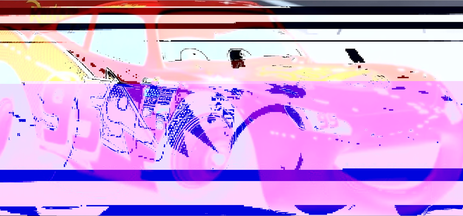
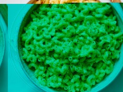
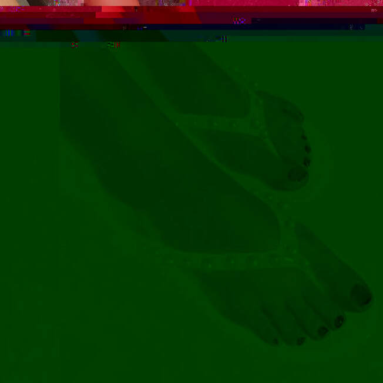
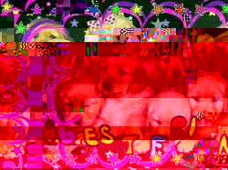

Here are some of the images I glitched using Photoshop. I chose to glitch four different images that remind me of my childhood and even now as a young adult, because I still feel like a kid.
Notice how the 95 and lightning symbol are reflected and slightly wavered off to the side and how the pink filter is put over and the blue glitch lunes are formed. This is an epitome of a glitch image due to the fact that the colors are blended in along with small dots and marks all over the screen.
This glitch image is macaroni and cheese. As you can see the screen is filtered out with a greenish tint color, and the real and original colors of the image are located on the top of it, as the macaroni is visible and seen to be yellow in color and the table being white is clear too. The green filter also makes the macaroni green toppings look black too in this picture. So there is a color change in this photo, thus making it a whole new image.
This image is a picture of feet with nails painted with nail polish alongside flip flops and is glitched to be dark green and mix of red, with blurs all around. The meaning of this glitch is to make the picture much more darker than it was originally and it looks different, as it's changed in its color entirely.
Suffice as to say, I also glitched an image of puppies because they are my favorite animal, along with cats and kittens. I glitched all these images using Audacity, PhotoShop, and TextEdit. With a bit of experimentation and test trials it really turned out pretty decent.